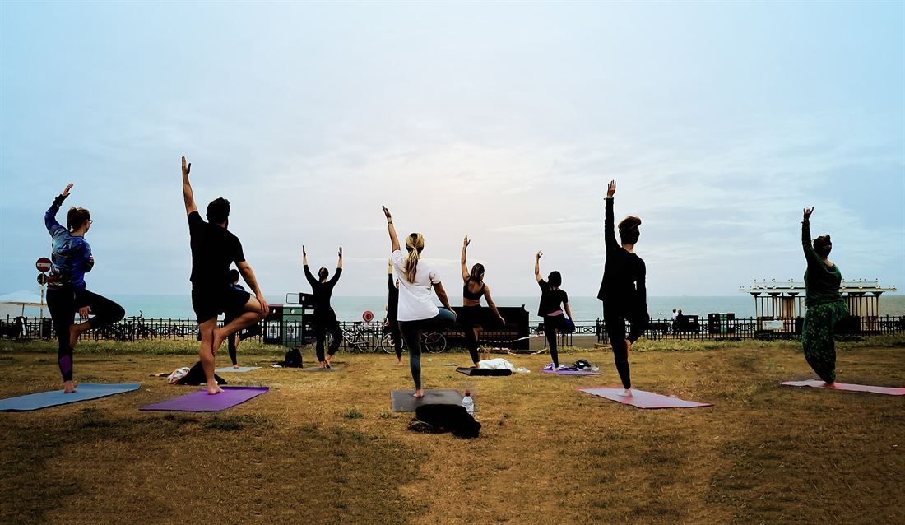

About Asana Atlas
A clear, honest map of yoga
Asana Atlas is an independent online guide to yoga. We believe good information about yoga should be free, carefully written and safe to follow, and that anyone who wants a teacher’s help should be able to get it at a fair, transparent price.
Why we exist
Our mission
The internet is full of yoga content: impressive photos, quick tips and bold promises. What’s harder to find is patient, practical instruction that explains how to do a pose, why you might practice it, how to make it easier and when to skip it.
Asana Atlas was created to be that resource. We organize yoga the way a field guide organizes a landscape: pose by pose, style by style, with the history and philosophy that give the practice its meaning. Everything on the site is free to read, with no account required.
What you’ll find here
What we offer
- A pose library of 33 essential postures with photos, steps, cautions and modifications
- A comparison of ten yoga styles, from Hatha to Hot yoga
- A beginner’s guide with a starter sequence and four-week plan
- Breathwork and meditation guides with clear safety notes
- History and philosophy, from the Vedas to the present day
- Live one-to-one sessions with simple, published pricing
How we work
Our principles
Safety before spectacle
Every pose includes cautions and easier variations. We would rather you practice a simple pose well than attempt an advanced one unprepared.
Honest about benefits
We describe what poses are traditionally used for and what people commonly report, without promising cures, weight loss or medical outcomes.
Rooted in tradition
We draw on classical texts and widely taught alignment principles, and we explain Sanskrit terms with care and respect for yoga’s Indian origins.
For every body
Our photographs show people of different ages, backgrounds and body types, and our instructions always offer a starting point for beginners.
Transparent pricing
Our sessions have one clear price each, with no subscriptions, sign-up fees or hidden charges, and a first-session guarantee.
Open to correction
If we get something wrong, we want to know. Corrections are reviewed and fixed promptly. See our editorial policy.

Teaching standards
Who teaches our sessions
Live sessions are taught by certified yoga teachers. Professional sessions are led by teachers with at least 200 hours of formal training; Expert sessions are led by senior teachers with 500 or more hours of training and extensive teaching experience.
Our teachers adapt each session to the information you share, but they are yoga instructors, not medical professionals. They won’t diagnose, treat or offer therapy for medical or mental-health conditions, and they will always encourage you to follow your doctor’s advice.
Independence
How Asana Atlas is funded
Asana Atlas is funded by the live sessions we offer and may also display advertising. Advertising is always clearly separated from our content, and advertisers have no influence over what we write. We don’t accept payment for recommendations. Our full approach is described in our editorial policy and privacy policy.
Questions, feedback or corrections? Email hello@asanaatlas.us or use our contact page.
Photo credits
The photographers behind the plates
Every photograph on Asana Atlas is a real photograph (we don’t use AI-generated images of people) and is used under an open license that allows reuse: Creative Commons (CC BY, CC BY-SA, CC0) or the public domain. We thank the photographers and practitioners who shared their work. Images have been resized and compressed for the web.
- Hero tree sunset — “El árbol (162477455)” by Jusezam, CC BY-SA 3.0, via Wikimedia Commons
- Hero meditation — “Thai woman meditating” by Kochphon (Honey) Onshawee, CC0, via Wikimedia Commons
- Og default — “Yoga at Sunset” by Dennis Yang from San Francisco, CA, USA, CC BY 2.0, via Wikimedia Commons
- About hero — “Surf Yoga Sunset - Flickr - stevehfung” by Steve FUNG, CC BY-SA 2.0, via Wikimedia Commons
- Beginners hero — “Yogi unrolling yoga mat on the floor. (50214718967)” by Nenad Stojkovic, CC BY 2.0, via Wikimedia Commons
- Breathing hero — “Calm Down Your Mind” by Mona Hassan Abo-Abda, CC BY-SA 4.0, via Wikimedia Commons
- Philosophy hero — “Udi demonstrating Padmasana (lotus position) in Varanasi - 2016” by Ron Borkin (רון בורקין), CC BY-SA 3.0, via Wikimedia Commons
- Sessions hero — “Woman with long curly hair sitting on yoga mat and working on a laptop” by Shixart1985, CC BY 2.0, via Wikimedia Commons
- Contact — “Woman sitting on a yoga mat tying her hair in a ponytail” by Shixart1985, CC BY 2.0, via Wikimedia Commons
- Home space — “Yoga mat and water bottle in a living room” by Femivaco, CC BY 4.0, via Wikimedia Commons
- Home gear — “Yoga mats” by Sha89sha, CC0, via Wikimedia Commons
- Hands on mat — “Closeup of the woman on a yoga mat stretching her hips. (50398220748)” by Nenad Stojkovic, CC BY 2.0, via Wikimedia Commons
- Meditation garden — “Toronto Falun Gong Exercises 6” by Joffers951, CC BY-SA 4.0, via Wikimedia Commons
- Meditation sea — “Om Bhur Bhuvah Svah (62348621)” by Magdalena Roeseler, CC BY 3.0, via Wikimedia Commons
- Meditation waterfall — “Tanumânasî en Meditacion Loto Padmasana” by Jesús Bonilla (Tanumânasî), Public domain, via Wikimedia Commons
- Meditation beach — “Dr Padmasana” by DayakSibiriak, CC BY-SA 4.0, via Wikimedia Commons
- Online session — “Yoga practice at home with computer in living room undefined” by Shixart1985, CC BY 2.0, via Wikimedia Commons
- Older practice — “Woman doing exercises on a yoga mat in her house” by Shixart1985, CC BY 2.0, via Wikimedia Commons
- Group hill — “BrightonYoga couver outdooryoga hove lawns” by BrightonYoga, CC BY-SA 4.0, via Wikimedia Commons
- Holding mat — “A woman prepares for her yoga routine” by Shixart1985, CC BY 2.0, via Wikimedia Commons
- Style: hatha — “Vrksasana” by Judith, CC BY 2.0, via Wikimedia Commons
- Style: vinyasa — “Platinum Yoga” by Greatmats, CC BY-SA 4.0, via Wikimedia Commons
- Style: ashtanga — “Sirsasana Yoga Yajnavalkya Mukta Posture” by Neeta Lind, CC BY 2.0, via Wikimedia Commons
- Style: iyengar — “Warrier Pose” by Pinkpanther0, CC BY 4.0, via Wikimedia Commons
- Style: yin — “YogaClass” by The original uploader was Trollderella at English Wikipedia., CC BY-SA 2.0, via Wikimedia Commons
- Style: restorative — “Baddha Konasana with forward bend” by Celestinablue, CC BY-SA 4.0, via Wikimedia Commons
- Style: kundalini — “A woman with curly hair sitting on a mat and meditating” by Shixart1985, CC BY 2.0, via Wikimedia Commons
- Style: power — “Supported Headstand Pair Preparation” by lululemon athletica, CC BY 2.0, via Wikimedia Commons
- Style: hot — “Flickr - Nicholas T - Bent” by Nicholas A. Tonelli from Pennsylvania, USA, CC BY 2.0, via Wikimedia Commons
- Style: gentle — “Woman doing hip exercises on a yoga mat on the floor” by Shixart1985, CC BY 2.0, via Wikimedia Commons
- Pose: mountain — “Yoga am See” by Kintianua, CC BY-SA 4.0, via Wikimedia Commons
- Pose: tree — “Free souls” by Ronyyz, CC BY-SA 4.0, via Wikimedia Commons
- Pose: warrior 1 — “Rocket-yoga-04-1200px” by Lilianwhite, CC BY 4.0, via Wikimedia Commons
- Pose: warrior 2 — “Yoga Warrior I” by lululemon athletica, CC BY 2.0, via Wikimedia Commons
- Pose: warrior 3 — “Virabhadrasana III in Egypt” by Mona Hassan Abo-Abda, CC BY-SA 4.0, via Wikimedia Commons
- Pose: triangle — “Vishal trikonasana” by Lyu vishal020, CC BY 4.0, via Wikimedia Commons
- Pose: side angle — “Utthita Parshvakonasana Heinz Grill” by Robert Lindermayr, CC BY-SA 4.0, via Wikimedia Commons
- Pose: half moon — “Ardha Chandrasana (cropped)” by Nikiwiki242, CC BY-SA 4.0, via Wikimedia Commons
- Pose: chair — “Utkatasana Side View” by lululemon athletica, CC BY 2.0, via Wikimedia Commons
- Pose: eagle — “Garudasana in park” by Mona Hassan Abo-Abda, CC BY-SA 4.0, via Wikimedia Commons
- Pose: dancer — “Yoga asana by sea” by Alex Beattie, CC BY 2.0, via Wikimedia Commons
- Pose: downward dog — “Downward-Facing-Dog” by Iveto, CC BY 3.0, via Wikimedia Commons
- Pose: plank — “Woman-in-black-tank-top-and-black-leggings-doing-yoga-3823063” by Elly Fairytale, CC BY-SA 4.0, via Wikimedia Commons
- Pose: side plank — “Yoga PLank” by lululemon athletica, CC BY 2.0, via Wikimedia Commons
- Pose: cobra — “Bhujangasana Heinz Grill” by Robert Lindermayr, CC BY-SA 4.0, via Wikimedia Commons
- Pose: upward dog — “Yoga (9707547692)” by Dave Rosenblum, CC BY 2.0, via Wikimedia Commons
- Pose: cat cow — “Yoga at Your Park - Bitilasana” by Mary O'Neill, Public domain, via Wikimedia Commons
- Pose: child — “Balasana” by Iveto, CC BY-SA 4.0, via Wikimedia Commons
- Pose: bridge — “Setubandhasana oblique view” by Biswarup Ganguly, CC BY 3.0, via Wikimedia Commons
- Pose: wheel — “Chakrasana Yoga-Asana Nina-Mel” by Kennguru, CC BY 3.0, via Wikimedia Commons
- Pose: camel — “Ustrasana - Camel Pose Purple Top” by lululemon athletica, CC BY 2.0, via Wikimedia Commons
- Pose: bow — “Unknown asana 10” by Benjamin J. DeLong, CC BY 2.0, via Wikimedia Commons
- Pose: pigeon — “Kapotasana-Yoga-Posture-Pigeon” by Jfbongarçon, CC BY-SA 3.0, via Wikimedia Commons
- Pose: seated forward — “Pashchimottanasana Heinz Grill” by Robert Lindermayr, CC BY-SA 4.0, via Wikimedia Commons
- Pose: standing forward — “Uttanasana finita 1300px” by Roberto Busconi at Yoga Mon Amour, CC BY-SA 4.0, via Wikimedia Commons
- Pose: boat — “Ardha-Navāsana” by Iveto, CC BY-SA 4.0, via Wikimedia Commons
- Pose: twist — “Ardha Matyendrasana - Half Lord of the Fishes Pose - Bound Arm Variation” by lululemon athletica, CC BY 2.0, via Wikimedia Commons
- Pose: bound angle — “Xuan Lan Yoga” by Josean Muñoz Salvatierra, CC BY-SA 4.0, via Wikimedia Commons
- Pose: easy seat — “Udi demonstrating Padmasana (lotus position) - 2016” by Ron Borkin (רון בורקין), CC BY-SA 3.0, via Wikimedia Commons
- Pose: crow — “Bakasana1” by Iveto, CC BY-SA 4.0, via Wikimedia Commons
- Pose: headstand — “Salamba Sirsasana - Supported Headstand” by lululemon athletica, CC BY 2.0, via Wikimedia Commons
- Pose: shoulderstand — “Vipartkarani” by Rutvi Bhimani, CC BY 4.0, via Wikimedia Commons
- Pose: savasana — “Helen yoga2” by Alintoft, Public domain, via Wikimedia Commons
.jpeg){kind=link}


.jpg){kind=link}

_in_Varanasi_-_2016.jpg){kind=link}


.jpg){kind=link}

.jpeg){kind=link}


.jpg){kind=link}


.jpg){kind=link}


_-_2016.jpg){kind=link}